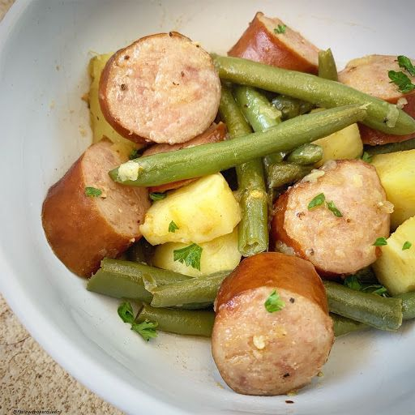

Green Beans, Potatoes, and Sausage

Description
The household favorite dish that is very easy to make
Ingredients
- 2 cans green beans
- 2-3 large potatoes
- 12oz smoked sausage
Steps
- Slice smoked sausage
- Place all ingredients into slow cooker
- Cook on low 6-8 hours
Return to main page